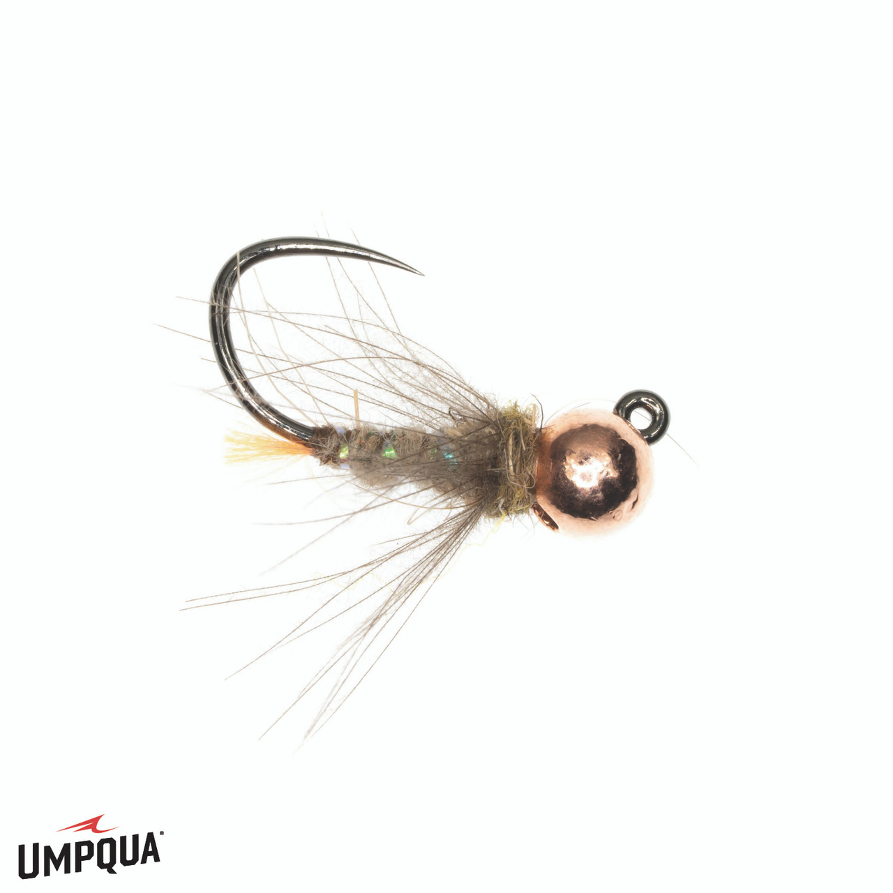

Fly Glossary
Flies organized by what they imitate — creature first, then life stage. Tap a stage to expand. Flies with multiple uses are noted. Attractor and streamer patterns follow the imitative sections.
Mayflies
▼
The most important insect order for fly fishing. Mayflies have four life stages — nymph, emerger, dun, and spinner — each requiring a different fly. Learning to identify which stage is active is the foundation of matching the hatch.
Nymph
▶

Flashback Pheasant Tail
Covers BWO, Blue Quill, and most mayfly hatches

BH Pheasant Tail
Standard PT — go-to across mayfly hatches

BH Hare's Ear (Tan)
Quill Gordon, Hendrickson, Light Cahill nymph

BH Hare's Ear (Olive)
BWO and Sulphur nymph

Soft Hackle PT (Bead)
Blue Quill and Quill Gordon nymph
Dry / wet — can be swung as a wet fly

Soft Hackle PT (No Bead)
BWO nymph; lighter for slow pools
Dry / wet — can be swung as a wet fly

Sulphur Nymph
Fish May–July evenings before the dun hatch begins

March Brown Nymph
April–May; larger profile, fish deeper runs

Zug Bug
Isonychia nymph imitation — swing through fast runs

Hendrickson Nymph
April–May; fish riffles and runs before afternoon hatch
Emerger
▶

Sparkle Dun (BWO)
Trailing shuck BWO — fish flush in the film

Snowshoe Emerger (BWO)
CDC wing sits low; excellent for picky risers

Split-Case BWO
Just-hatching profile; case splits as wing emerges

Zelon Cripple (BWO)
Imitates a stuck emerger — deadly on selective fish

Sulphur Emerger
Late afternoon May–July; fish just below the surface

Sparkle Dun (Sulphur)
Trailing shuck Sulphur — film pattern for evening rises

RS2 (Olive)
BWO emerger; minimal profile for clear slow water

RS2 (Grey)
BWO and Midge emerger; grey body for overcast days

Sparkle Wing RS2
RS2 variant with high-vis sparkle wing post

CDC RS2
Blue Quill dun/emerger; CDC wing sits flush in film
Dun
▶

Adams
Universal mayfly dun — BWO, Blue Quill, Quill Gordon, Isonychia, Hendrickson

Parachute Adams
High-vis parachute post; easier to track in broken water

BWO Parachute
Olive body parachute; Feb–Mar and Oct–Nov afternoons

Light Cahill
May–Sept evenings; also a Sulphur stand-in
Dry / can be fished wet

March Brown
April–May sporadic hatch all day
Dry / can be fished wet

Sulphur Dry
Pale yellow body; late afternoon into evening May–July

Sulphur Parachute
High-vis post version — easier to track in low evening light

Green Drake / Paradrake
Late May evenings only; large profile #10; also White Wulff

Hendrickson (Tan)
April–May all day; female has yellow egg sac
Spinner
▶

Rusty Spinner
BWO, Blue Quill, Sulphur spinner falls; flush in the film

Mahogany Spinner
Isonychia and Light Cahill spinner falls; dark reddish spent-wing
Caddisflies
▼
Three life stages — larva, pupa, and adult. Caddis hatch April through August on High Country streams. The pupa stage (swung soft hackle or X-Caddis) is often the most productive window. Adults flutter on the surface — a skating dry can trigger aggressive takes.
Larva
▶

Caddis Larva (Green)
Dead-drift near bottom; effective all season as a trailer nymph
Pupa
▶

BH Caddis Pupa (Hare's Ear)
Dead-drift or swing near bottom; broad match for brown caddis

BH Caddis Pupa (Olive)
Olive variant; good in slightly stained water

BH Sparkle Pupa (Olive)
Heavier for fast runs; sparkle body catches light

Sparkle Caddis Pupa (Tan)
Swing or dead-drift; mid-season brown caddis

X-Caddis (Tan)
Trailing shuck — sits in the film as pupa breaks through
Film / can be fished wet

X-Caddis (Iron)
Heavier version for fast runs and pocket water
Film / can be fished wet

Soft Hackle Wet
Primary caddis pupa imitation — swing through current on the hang
Wet — also effective for Isonychia and BWO
Adult
▶

Elk Hair Caddis (Tan)
Standard WNC caddis dry; brown or mottled gray caddis April–Aug
Dry / can be drowned and swung wet

Elk Hair Caddis (Dark)
Dark/black caddis — mid-April mornings and early May
Dry / can be drowned and swung wet

X-Caddis (Brown)
Brown trailing shuck adult; great mid-season June–Aug
Film / can be fished wet
Stoneflies
▼
Two life stages — nymph and adult. Stoneflies don't emerge on the water; they crawl out on rocks to hatch. Fish the nymph year-round; switch to the adult when you see them crawling on streamside rocks. Four species on High Country streams from February through August.
Nymph
▶

Black Stonefly Nymph
Early Black Stone — fish Jan–Mar, all day in rocky runs

Giant Stonefly Nymph
Pteronarcys — large #4–8; fish April–May early mornings near boulders

Golden Stonefly Nymph
Acroneuria — rubber leg variant; fish July–Aug mornings deep

Yellow Stonefly Nymph
Yellow Sally (Isoperla) — fish riffles and runs June–July

Copper John
Weighted stonefly nymph imitation — flash body sinks fast; covers Giant and Golden Stone

Copper John (Red)
Red variant — swap when copper isn't producing
Adult
▶

Black Adult Stonefly
Early Black Stone adult — all day Jan–Mar on mild days
Dry / can be swung wet

Stimulator (Orange)
Giant and Golden Stonefly adult; skate or swing at first and last light
Dry / also fished as dry-dropper anchor

Stimulator (Yellow)
Yellow Sally adult; late afternoon June–July in riffles
Dry / also fished as dry-dropper anchor

Rubber Leg Stimulator (Yellow)
Yellow Sally variant; rubber legs add movement in fast water
Dry / also fished as dry-dropper anchor

Rubber Leg Stimulator (Orange)
Golden and Giant Stone; high-vis for fast pocket water
Dry / also fished as dry-dropper anchor

Rubber Leg Stimulator (Olive)
General stonefly adult; good searching pattern in low clear water
Dry / also fished as dry-dropper anchor
Midges
▼
Year-round on High Country streams, but most important in cold months (January–March, October–December) when little else is hatching. Require small hooks (#18–24) and fine tippet (7X). Don't skip these in winter — midges may be the only thing keeping fish actively feeding.
Nymph / Larva
▶

Zebra Midge (Black)
Black thread, silver rib, bead head — dead-drift deep on 7X tippet

Zebra Midge (Red)
Red wire rib variant — swap when black isn't producing
Emerger / Adult
▶

Griffith's Gnat
Imitates midge cluster in the film; hang just below surface on 7X
Dry / emerger — works at film or just below
Terrestrials
▼
Land-born insects that fall onto the water — ants, beetles, hoppers, inchworms. Active June through September. Often the dominant food source in mid-summer when aquatic hatches slow down. Fish tight to banks, under overhanging vegetation, and below tree canopy.
Ants
▶

Foam Ant (Black)
All-day producer June–Sept; fish tight to banks and under trees

Flying Ant (Black)
Spent-wing; flush in the film; Aug–Sept mating falls

Flying Ant (Brown)
Brown spent-wing variant — carry both black and brown for ant falls
Beetles
▶

Foam Beetle
July–Aug especially during Japanese beetle season; fish near overhanging trees
Hoppers
▶

Dave's Hopper
July–Aug afternoons; cast near grassy banks and let it sit
Attractor Patterns
▼
These flies don't imitate a specific insect but trigger strikes through flash, color, movement, or a general buggy appearance. Especially effective on stocked and Delayed Harvest water where fish respond to presentation and flash over exact imitation.
Nymph Attractors
▶

Prince Nymph
Peacock body, white biots; general attractor across most conditions

Prince Nymph (Bead)
Bead head version — sinks faster for deeper runs

Double Bead Prince
Extra weight for deep fast runs; gets down quickly

Psycho Prince (Orange)
Flashier variant with hot orange accents; good in off-color water

Frenchie
Pheasant tail body, hot spot collar; euro jig nymph for pressured fish

Frenchie PT
Pheasant tail variant of the Frenchie; slightly more natural profile

Duracell
Tungsten jig, peacock body, copper bead; sinks fast, triggers selective fish

Perdigon (Black)
UV resin body, slick profile; sinks fast and doesn't spook pressured fish

no imageBlowtorch
Tungsten bead, orange hot-spot collar; sinks fast and triggers strikes on selective trout

Squirmy Worm
Rubber worm body; deadly in high or dirty water and post-rain

Walt's Worm
Hare's ear worm; subtle, natural look for clear low water

San Juan Worm (Red)
Classic worm pattern; high water, post-rain, and fresh stockings
Dry Attractors
▶

Chubby Chernobyl
Foam body; floats high, excellent dry-dropper anchor; works as hopper or stonefly suggestion

Humpy (Yellow)
Buoyant hair-body dry; effective during Sulphur, Yellow Sally, and Green Sedge hatches; solid dry-dropper anchor

Humpy (Red)
Red variant; strong attractor on freestone streams when yellow isn't producing